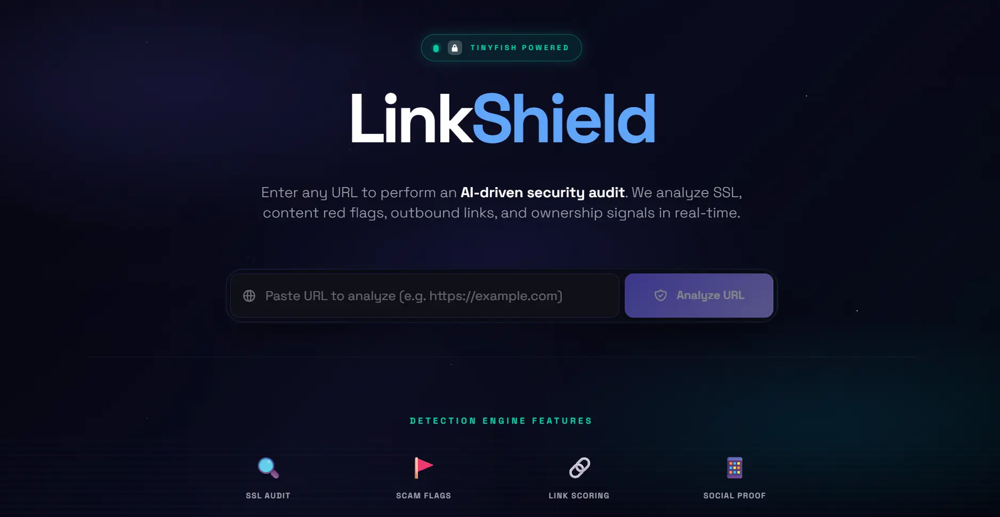
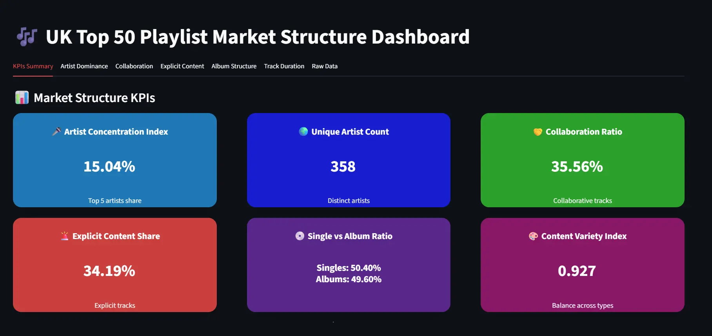
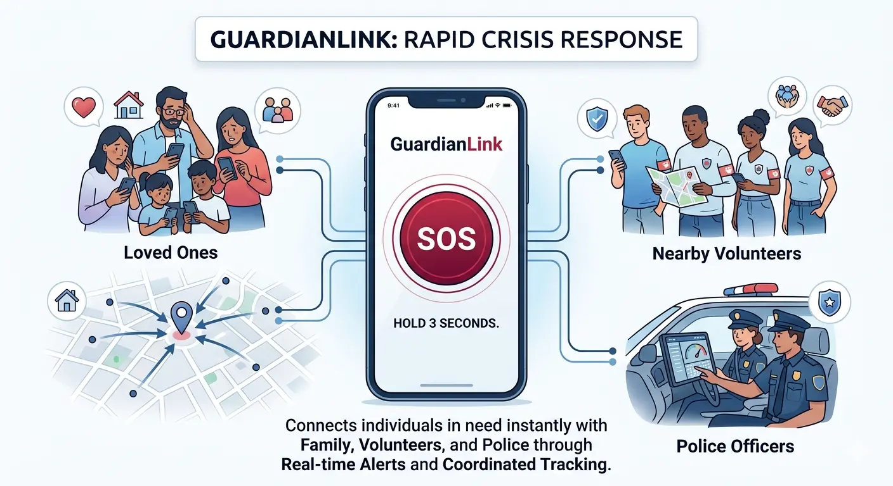

Abhishek
Chauhan
I design and ship production ML systems — models, pipelines, and dashboards that turn data into decisions. Bridging clean research and scalable engineering deployments.
Turning Data into
Production Reality
I'm Abhishek — an AI/ML engineer who turns messy data into production-ready systems. I build ML models, fast pipelines, and insightful dashboards that drive real decisions and deliver measurable impact.
My edge is bridging research and deployment: deep learning models, clean REST APIs, and analytics that even non-technical teams can act on.
Fast Prototyper
From idea to working demo in days, not weeks.
Production Mindset
Clean code, tested pipelines, scalable infra.
Data-First Design
Every decision backed by metrics and analysis.
Core Capabilities
A curated selection of tools, stacks, and frameworks I use to deploy modern intelligent services.
Machine Learning
Model training, evaluation, deployment, and automation using TensorFlow, Keras, and scikit-learn.
Computer Vision
Image classification, face recognition, and video analytics using OpenCV, transfer learning, and deep models.
Data Analytics
Data cleaning, ETL, interactive dashboards, and storytelling with Pandas, Plotly, Streamlit, and Power BI.
Backend & APIs
Flask and Django services for model serving, custom REST APIs, and modern secure web application integration.
Mobile & Web
Flutter and modern front-end patterns to turn intelligent AI capabilities into polished, interactive user applications.
MLOps
Versioned pipelines, deployment readiness, and scalable inference environments for highly robust production systems.
Featured Neural Works
Projects combining mathematical rigour, architectural design, and production deployment.
AI Health Friend
Cross-platform intelligence for symptom analysis, model-backed diagnostics, and emergency alert integration. Deploys custom lightweight scoring algorithms connected to a mobile app client.
NeuroSpark
Brain MRI classification with convolutional networks and a Django web interface built for automatic screening and medical analytics of scans.

Bovine Classifier
A transfer-learning system for cattle breed identification designed for extreme reliability under agricultural and field conditions.

LinkShield
Real-time malicious link detection and protection for web apps using URL feature engineering and lightweight ML scoring.

UK Top 50 Dashboard
Interactive playlist and streaming structure analysis tracker for UK Top 50 trends with stream data export.

GuardianLink
EnterpriseA rapid crisis response app that connects individuals at risk with their loved ones, nearby volunteers, and police officers through instant, real-time SOS alerts.In critical situations, every second counts. GuardianLink bridges the gap between victims and responders by creating a 𝗿𝗲𝗮𝗹-𝘁𝗶𝗺𝗲 𝗰𝗼𝗺𝗺𝘂𝗻𝗶𝘁𝘆 𝘀𝗮𝗳𝗲𝘁𝘆 𝗲𝗰𝗼𝘀𝘆𝘀𝘁𝗲𝗺.
Face Recognition Attendance
BiometricsAutomated facial recognition attendance platform providing real-time scanning, secure logging, SQLite database transactions, and live activity metrics.
Experience Highlights
Professional roles, internships, and mentorship paths that built my engineering frameworks.
AI/ML Intern
SureTrust
Working on machine learning models, data pipelines, and AI solutions. Excited to apply skills and gain hands‑on experience in Artificial Intelligence & Machine Learning.
Data Analytics Intern
Graphura India
Built an SEO opportunity finder and a resume-matching engine: designed ETL pipelines, trained ranking models, and deployed Flask APIs. Improved matching accuracy and reduced manual triage by ~40%.
Technical Mentor & Volunteer
University Polytechnic, AMU
Led workshops and developed robust curriculum for Python and ML, mentored 30+ students on projects, organised hackathons, and guided capstone teams to production-ready demos.
Ready to Collaborate?
Available for freelance contracts, deep learning pipelines, and full-time AI/ML roles. Click below to connect.